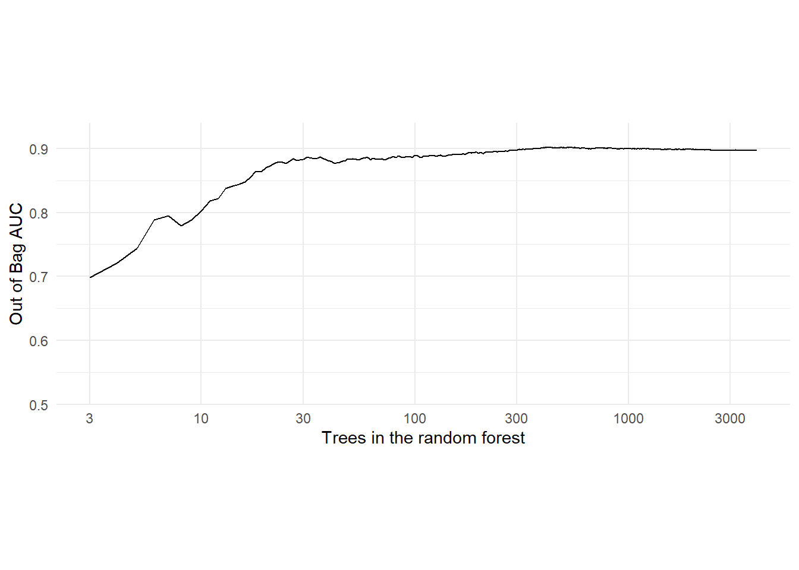
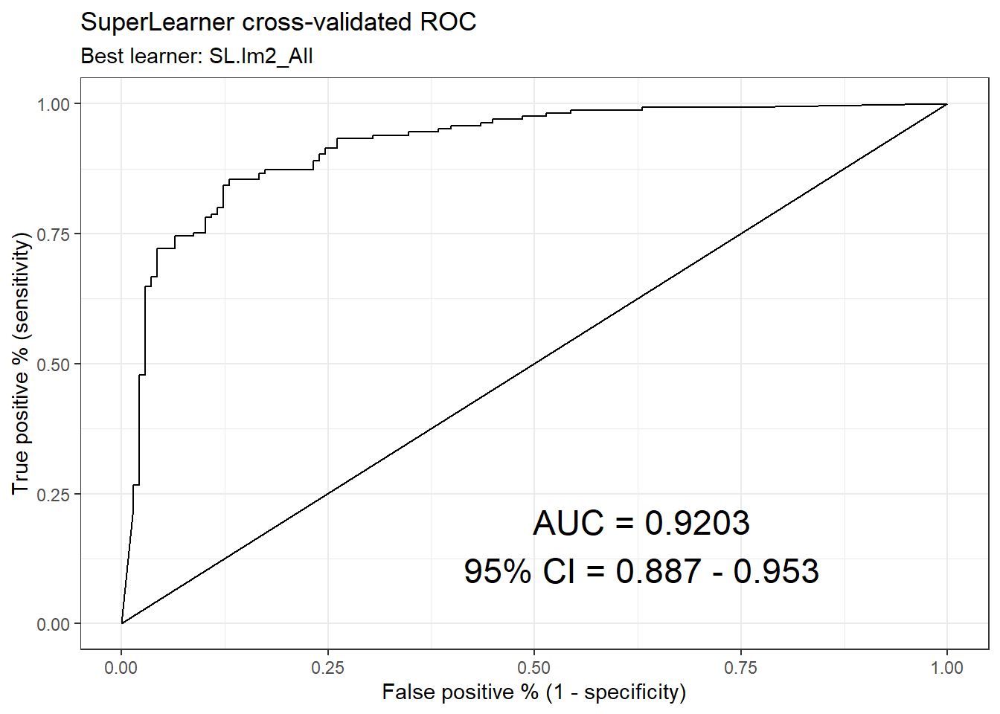
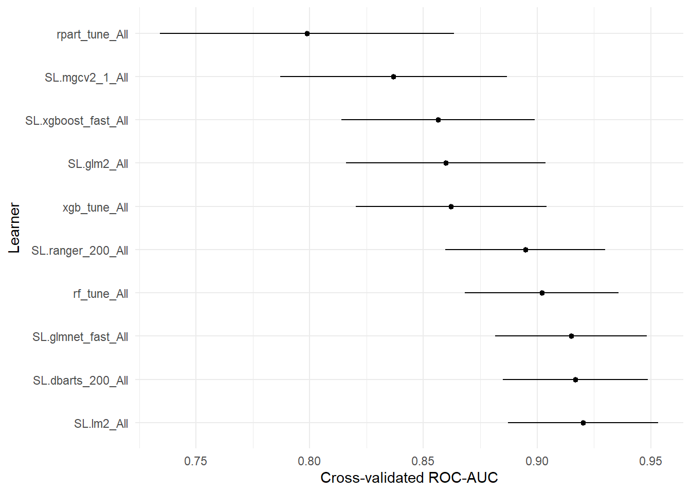
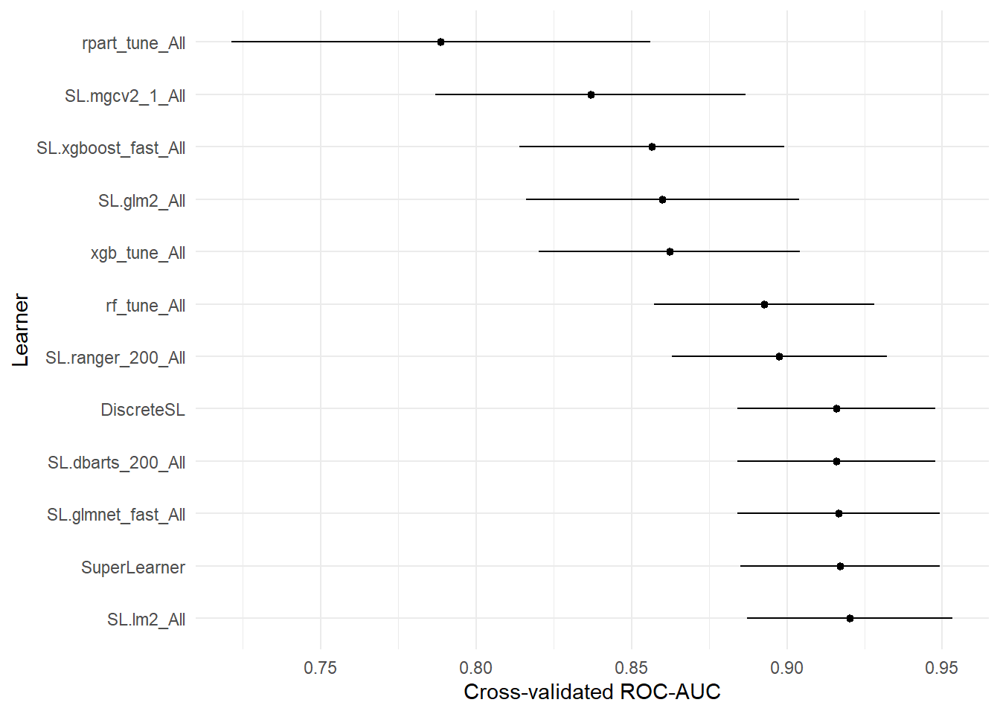
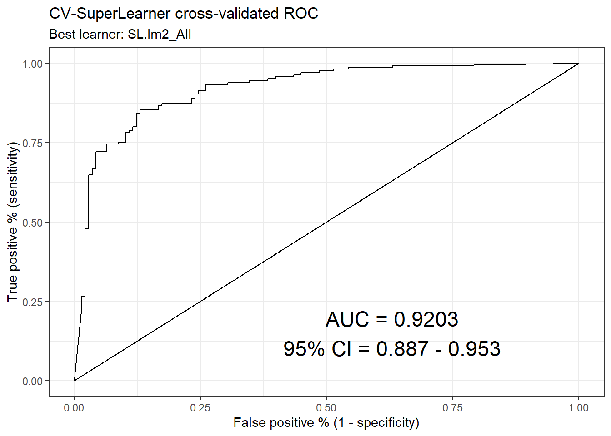
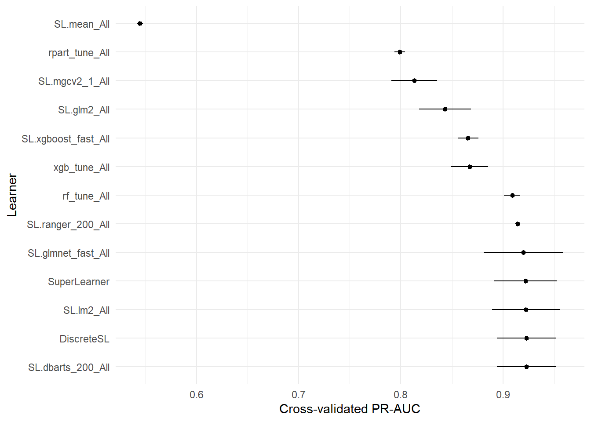

Chapter 6 Modeling
Load data
6.1 Random forest
set.seed(1, "L'Ecuyer-CMRG")
# mlr wants covariates and outcome to be in the same dataframe.
# For classification RF needs Y to be a factor.
# We use the best mtry based on the CV.SL results from the final prediction library.
# Takes 1 second.
(rf_time = system.time({
# Ranger uses all available threads by default, nice.
y = as.factor(data[[vars$outcomes[1]]])
rf = ranger::ranger(y ~ . ,
data = data[, vars$predictors],
num.threads = get_cores(),
# Need this option for OOB curve analysis.
keep.inbag = TRUE,
num.trees = 4000,
# Could also do importance = "impurity".
importance = "permutation",
# Set based on separate grid/random search.
mtry = 4L,
# Set based on separate grid/random search.
min.node.size = 5L)
}))## user system elapsed
## 1.92 0.17 0.786.1.1 RF convergence plot
The results of this block are cached because they are slow to compute.
library(mlr)
library(OOBCurve)
oob_data = data[, c(vars$outcomes[1], vars$predictors), drop = FALSE]
# Outcome needs to be a factor.
oob_data[[vars$outcomes[1]]] = as.factor(data[[vars$outcomes[1]]])
task = makeClassifTask(data = oob_data, target = vars$outcomes[1])
# Current package has a bug such that multiple measures have to be specified.
# We aren't using the Brier score though.
# TODO: these results could be averaged over multiple random shufflings
# of the tree ordering. Would give a more accurate, smoother curve.
# This takes ~10 seconds.
system.time({
results = OOBCurve(rf, measures = list(mlr::auc, mlr::brier), task = task,
data = oob_data)
})## user system elapsed
## 9.80 0.11 10.18# Look at the OOB AUC with the maximum number of trees.
# 0.894
(rf_auc = results$auc[length(results$auc)])## [1] 0.8972771# Can zoom in to certain segments of the forest indexed by an ntree range.
tree_start = 3
#tree_start = 10
tree_end = length(results$auc)
x_span = seq(tree_start, tree_end)
y_span = results$auc[x_span]
ggplot(mapping = aes(x = x_span, y = y_span)) + geom_line() + theme_minimal() +
coord_fixed(ratio = 3) +
scale_y_continuous(expand = c(0, 0), limits = c(0.5, 0.94)) +
scale_x_log10(breaks = c(3, 10, 30, 100, 300, 1000, 3000),
limits = c(3, 4000),
minor_breaks = NULL) +
labs(x = "Trees in the random forest", y = "Out of Bag AUC")
6.2 Ensemble
6.2.1 Prep SL library
# Via R/sl-dbarts2.R
SL.dbarts = SL.dbarts2
# We aren't using this grid.
learner_bart =
create.Learner("SL.dbarts",
# Turning off detailed_names because binary_offset has a negative value.
#detailed_names = FALSE,
detailed_names = TRUE,
params = list(nthread = getOption("cores")),
tune = list(ntree = c(1, 2, 5, 10, 20, 50, 100, 200, 500)))#,
screen_names = function(Y, X, names = names(X), ...) {
return(names(X) %in% names)
}
# TODO: add feature selection options (BART, lasso, RF)
# TODO: explore optimization of the meta-learner step.
xgb_tune = function(Y, X, newX, family, obsWeights, id, ...) {
cat("Running xgb_tune\n")
# Create tuning grid.
grid = create.Learner("SL.xgboost_fast", detailed_names = TRUE,
tune = list(
# 27 combos.
ntrees = c(100L, 300L, 1000L),
max_depth = c(1L, 3L, 6L),
shrinkage = c(0.01, 0.1, 0.3)))
# Coarser/faster grid.
grid2 = create.Learner("SL.xgboost_fast", detailed_names = TRUE,
tune = list(
# 8 combos.
ntrees = c(250L, 1000L),
max_depth = c(2L, 4L),
shrinkage = c(0.05, 0.2)))
# Run SuperLearner.
# id argument is not being passed to avoid an error "stratified sampling with id not currently implemented"
sl = SuperLearner(Y = Y, X = X, newX = newX, obsWeights = obsWeights, family = family,
SL.library = grid2$names,
cvControl = SuperLearner.CV.control(stratifyCV = TRUE,
# Set to 2 for tutorial.
V = 2L),
#V = 5L),
verbose = FALSE)
cat("XGB tuned SL:\n")
print(sl)
# fit returns all objects needed for predict()
fit = list(object = sl)
# Declare class of fit for predict()
class(fit) = 'SuperLearner'
out = list(pred = sl$SL.predict, fit = fit)
return(out)
}
rf_tune = function(Y, X, newX, family, obsWeights, id, ...) {
cat("Running rf_tune\n")
# Create tuning grid.
grid = create.Learner("SL.ranger", detailed_names = TRUE,
params = list(num.threads = get_cores(),
# Set this based on the convergence analysis.
num.trees = 200),
tune = list(
# 9 combos.
min.node.size = c(2L, 5L, 15L),
mtry = floor(c(0.5, 1, 2) * sqrt(ncol(X)))))
# Run SuperLearner.
# id argument is not being passed to avoid an error "stratified sampling with id not currently implemented"
sl = SuperLearner(Y = Y, X = X, newX = newX, obsWeights = obsWeights, family = family,
#SL.library = c("SL.mean", grid$names),
SL.library = grid$names,
cvControl = SuperLearner.CV.control(stratifyCV = TRUE,
# Set to 2 for tutorial.
V = 2L),
#V = 5L),
verbose = FALSE)
cat("RF tuned SL:\n")
print(sl)
# fit returns all objects needed for predict()
fit = list(object = sl)
# Declare class of fit for predict()
class(fit) = 'SuperLearner'
out = list(pred = sl$SL.predict, fit = fit)
return(out)
}
glmnet_tune = function(Y, X, newX, family, obsWeights, id, ...) {
cat("Running glmnet_tune\n")
# Create tuning grid.
grid = create.Learner("SL.glmnet_fast", detailed_names = TRUE,
# 4 combos
tune = list(alpha = c(0.05, 0.3, 0.7, 0.95)))
# Run SuperLearner.
# id argument is not being passed to avoid an error "stratified sampling with id not currently implemented"
sl = SuperLearner(Y = Y, X = X, newX = newX, obsWeights = obsWeights, family = family,
SL.library = grid$names,
cvControl = SuperLearner.CV.control(stratifyCV = TRUE,
# Set to 2 for tutorial purposes.
V = 2L),
#V = 5L),
verbose = FALSE)
cat("Glmnet tuned SL:\n")
print(sl)
# TODO: may need to save the learners, put them in the global environment, or otherwise
# handle in a custom predict() method.
# fit returns all objects needed for predict()
fit = list(object = sl)
# Declare class of fit for predict()
class(fit) = 'SuperLearner'
out = list(pred = sl$SL.predict, fit = fit)
return(out)
}
rpart_tune = function(Y, X, newX, family, obsWeights, id, ...) {
cat("Running rpart_tune\n")
# Create tuning grid.
grid = create.Learner("SL.rpart2", detailed_names = TRUE,
tune = list(cp = c(0, 0.01),
minsplit = c(10, 20, 80),
maxdepth = c(5, 15)))
# Run SuperLearner.
# id argument is not being passed to avoid an error "stratified sampling with id not currently implemented"
sl = SuperLearner(Y = Y, X = X, newX = newX, obsWeights = obsWeights, family = family,
#SL.library = c("SL.mean", grid$names),
SL.library = grid$names,
cvControl = SuperLearner.CV.control(stratifyCV = TRUE, V = 5L),
verbose = FALSE)
cat("Rpart tuned SL:\n")
print(sl)
# TODO: may need to save the learners, put them in the global environment, or otherwise
# handle in a custom predict() method.
# fit returns all objects needed for predict()
fit = list(object = sl)
# Declare class of fit for predict()
class(fit) = 'SuperLearner'
out = list(pred = sl$SL.predict, fit = fit)
return(out)
}
learner_mgcv =
create.Learner("SL.mgcv2",
detailed_names = TRUE,
params = list(nthreads = min(10L, get_cores()),
continuous_values = 10L))
(sl_lib = c(list("SL.mean",
"SL.lm2",
"SL.glm2",
"SL.glmnet_fast"),
# stratified_lib$names,
# rpart_pruned$names,
learner_mgcv$names,
list(
"rpart_tune",
"SL.ranger_200",
"rf_tune",
"SL.dbarts_200",
"xgb_tune",
"SL.xgboost_fast")))## [[1]]
## [1] "SL.mean"
##
## [[2]]
## [1] "SL.lm2"
##
## [[3]]
## [1] "SL.glm2"
##
## [[4]]
## [1] "SL.glmnet_fast"
##
## [[5]]
## [1] "SL.mgcv2_1"
##
## [[6]]
## [1] "rpart_tune"
##
## [[7]]
## [1] "SL.ranger_200"
##
## [[8]]
## [1] "rf_tune"
##
## [[9]]
## [1] "SL.dbarts_200"
##
## [[10]]
## [1] "xgb_tune"
##
## [[11]]
## [1] "SL.xgboost_fast"6.2.2 Estimate SuperLearner
The results of this block are cached because they are slow to compute.
set.seed(1, "L'Ecuyer-CMRG")
(sl = SuperLearner(Y = data[[vars$outcomes[1]]],
X = data[, vars$predictors],
family = binomial(), SL.library = sl_lib,
cvControl = SuperLearner.CV.control(stratifyCV = TRUE,
#V = 10L),
V = 2L),
verbose = TRUE))## Number of covariates in All is: 33## CV SL.mean_All## Warning in predict.lm(fit, newdata = newX, type = "response"): prediction from a
## rank-deficient fit may be misleading## CV SL.lm2_All## Warning in predict.lm(object, newdata, se.fit, scale = 1, type = if (type == :
## prediction from a rank-deficient fit may be misleading## CV SL.glm2_All## Warning: executing %dopar% sequentially: no parallel backend registered## CV SL.glmnet_fast_All## CV SL.mgcv2_1_All## Running rpart_tune
## Rpart tuned SL:
##
## Call:
## SuperLearner(Y = Y, X = X, newX = newX, family = family, SL.library = grid$names,
## verbose = FALSE, cvControl = SuperLearner.CV.control(stratifyCV = TRUE,
## V = 5L), obsWeights = obsWeights)
##
##
## Risk Coef
## SL.rpart2_0_10_5_All 0.2027929 0.0000000
## SL.rpart2_0.01_10_5_All 0.2027929 0.0000000
## SL.rpart2_0_20_5_All 0.1807607 0.0000000
## SL.rpart2_0.01_20_5_All 0.1771161 0.0000000
## SL.rpart2_0_80_5_All 0.1648992 0.7542944
## SL.rpart2_0.01_80_5_All 0.1648992 0.0000000
## SL.rpart2_0_10_15_All 0.2102988 0.0000000
## SL.rpart2_0.01_10_15_All 0.1988584 0.2457056
## SL.rpart2_0_20_15_All 0.1807607 0.0000000
## SL.rpart2_0.01_20_15_All 0.1771161 0.0000000
## SL.rpart2_0_80_15_All 0.1648992 0.0000000
## SL.rpart2_0.01_80_15_All 0.1648992 0.0000000## CV rpart_tune_All## CV SL.ranger_200_All## Running rf_tune
## RF tuned SL:
##
## Call:
## SuperLearner(Y = Y, X = X, newX = newX, family = family, SL.library = grid$names,
## verbose = FALSE, cvControl = SuperLearner.CV.control(stratifyCV = TRUE,
## V = 2L), obsWeights = obsWeights)
##
##
## Risk Coef
## SL.ranger_2_2_All 0.1491320 0.00000000
## SL.ranger_5_2_All 0.1502432 0.00000000
## SL.ranger_15_2_All 0.1526904 0.00000000
## SL.ranger_2_5_All 0.1362120 0.92060845
## SL.ranger_5_5_All 0.1377101 0.07939155
## SL.ranger_15_5_All 0.1426574 0.00000000
## SL.ranger_2_11_All 0.1417842 0.00000000
## SL.ranger_5_11_All 0.1432871 0.00000000
## SL.ranger_15_11_All 0.1438529 0.00000000## CV rf_tune_All## CV SL.dbarts_200_All## Running xgb_tune
## XGB tuned SL:
##
## Call:
## SuperLearner(Y = Y, X = X, newX = newX, family = family, SL.library = grid2$names,
## verbose = FALSE, cvControl = SuperLearner.CV.control(stratifyCV = TRUE,
## V = 2L), obsWeights = obsWeights)
##
##
## Risk Coef
## SL.xgboost_fast_250_2_0.05_All 0.2481858 1
## SL.xgboost_fast_1000_2_0.05_All 0.2481858 0
## SL.xgboost_fast_250_4_0.05_All 0.2481858 0
## SL.xgboost_fast_1000_4_0.05_All 0.2481858 0
## SL.xgboost_fast_250_2_0.2_All 0.2481858 0
## SL.xgboost_fast_1000_2_0.2_All 0.2481858 0
## SL.xgboost_fast_250_4_0.2_All 0.2481858 0
## SL.xgboost_fast_1000_4_0.2_All 0.2481858 0## CV xgb_tune_All## CV SL.xgboost_fast_All## Number of covariates in All is: 33## CV SL.mean_All## Warning in predict.lm(fit, newdata = newX, type = "response"): prediction from a
## rank-deficient fit may be misleading## CV SL.lm2_All## Warning in predict.lm(object, newdata, se.fit, scale = 1, type = if (type == :
## prediction from a rank-deficient fit may be misleading## CV SL.glm2_All## CV SL.glmnet_fast_All## CV SL.mgcv2_1_All## Running rpart_tune
## Rpart tuned SL:
##
## Call:
## SuperLearner(Y = Y, X = X, newX = newX, family = family, SL.library = grid$names,
## verbose = FALSE, cvControl = SuperLearner.CV.control(stratifyCV = TRUE,
## V = 5L), obsWeights = obsWeights)
##
##
## Risk Coef
## SL.rpart2_0_10_5_All 0.2500382 0.0000000
## SL.rpart2_0.01_10_5_All 0.2500382 0.0000000
## SL.rpart2_0_20_5_All 0.1975844 0.7256534
## SL.rpart2_0.01_20_5_All 0.2023409 0.0000000
## SL.rpart2_0_80_5_All 0.2154568 0.2743466
## SL.rpart2_0.01_80_5_All 0.2154568 0.0000000
## SL.rpart2_0_10_15_All 0.2599618 0.0000000
## SL.rpart2_0.01_10_15_All 0.2599618 0.0000000
## SL.rpart2_0_20_15_All 0.2001702 0.0000000
## SL.rpart2_0.01_20_15_All 0.2049266 0.0000000
## SL.rpart2_0_80_15_All 0.2154568 0.0000000
## SL.rpart2_0.01_80_15_All 0.2154568 0.0000000## CV rpart_tune_All## CV SL.ranger_200_All## Running rf_tune
## RF tuned SL:
##
## Call:
## SuperLearner(Y = Y, X = X, newX = newX, family = family, SL.library = grid$names,
## verbose = FALSE, cvControl = SuperLearner.CV.control(stratifyCV = TRUE,
## V = 2L), obsWeights = obsWeights)
##
##
## Risk Coef
## SL.ranger_2_2_All 0.1674269 0.0000000
## SL.ranger_5_2_All 0.1694906 0.0000000
## SL.ranger_15_2_All 0.1688027 0.1498788
## SL.ranger_2_5_All 0.1593110 0.8501212
## SL.ranger_5_5_All 0.1626210 0.0000000
## SL.ranger_15_5_All 0.1642748 0.0000000
## SL.ranger_2_11_All 0.1739733 0.0000000
## SL.ranger_5_11_All 0.1753413 0.0000000
## SL.ranger_15_11_All 0.1833558 0.0000000## CV rf_tune_All## CV SL.dbarts_200_All## Running xgb_tune
## XGB tuned SL:
##
## Call:
## SuperLearner(Y = Y, X = X, newX = newX, family = family, SL.library = grid2$names,
## verbose = FALSE, cvControl = SuperLearner.CV.control(stratifyCV = TRUE,
## V = 2L), obsWeights = obsWeights)
##
##
## Risk Coef
## SL.xgboost_fast_250_2_0.05_All 0.2478803 1
## SL.xgboost_fast_1000_2_0.05_All 0.2478803 0
## SL.xgboost_fast_250_4_0.05_All 0.2478803 0
## SL.xgboost_fast_1000_4_0.05_All 0.2478803 0
## SL.xgboost_fast_250_2_0.2_All 0.2478803 0
## SL.xgboost_fast_1000_2_0.2_All 0.2478803 0
## SL.xgboost_fast_250_4_0.2_All 0.2478803 0
## SL.xgboost_fast_1000_4_0.2_All 0.2478803 0## CV xgb_tune_All## CV SL.xgboost_fast_All## Non-Negative least squares convergence: TRUE## full SL.mean_All## full SL.lm2_All## full SL.glm2_All## full SL.glmnet_fast_All## full SL.mgcv2_1_All## Running rpart_tune
## Rpart tuned SL:
##
## Call:
## SuperLearner(Y = Y, X = X, newX = newX, family = family, SL.library = grid$names,
## verbose = FALSE, cvControl = SuperLearner.CV.control(stratifyCV = TRUE,
## V = 5L), obsWeights = obsWeights)
##
##
## Risk Coef
## SL.rpart2_0_10_5_All 0.2137125 0.0000000
## SL.rpart2_0.01_10_5_All 0.2138648 0.0000000
## SL.rpart2_0_20_5_All 0.1967678 0.0000000
## SL.rpart2_0.01_20_5_All 0.2045359 0.0000000
## SL.rpart2_0_80_5_All 0.1846070 0.5971948
## SL.rpart2_0.01_80_5_All 0.1846070 0.0000000
## SL.rpart2_0_10_15_All 0.2196851 0.2349721
## SL.rpart2_0.01_10_15_All 0.2132001 0.0000000
## SL.rpart2_0_20_15_All 0.1952689 0.1678331
## SL.rpart2_0.01_20_15_All 0.2030371 0.0000000
## SL.rpart2_0_80_15_All 0.1846070 0.0000000
## SL.rpart2_0.01_80_15_All 0.1846070 0.0000000## full rpart_tune_All## full SL.ranger_200_All## Running rf_tune
## RF tuned SL:
##
## Call:
## SuperLearner(Y = Y, X = X, newX = newX, family = family, SL.library = grid$names,
## verbose = FALSE, cvControl = SuperLearner.CV.control(stratifyCV = TRUE,
## V = 2L), obsWeights = obsWeights)
##
##
## Risk Coef
## SL.ranger_2_2_All 0.1459784 0
## SL.ranger_5_2_All 0.1464061 0
## SL.ranger_15_2_All 0.1484737 0
## SL.ranger_2_5_All 0.1400146 0
## SL.ranger_5_5_All 0.1378980 1
## SL.ranger_15_5_All 0.1402499 0
## SL.ranger_2_11_All 0.1433777 0
## SL.ranger_5_11_All 0.1423325 0
## SL.ranger_15_11_All 0.1447646 0## full rf_tune_All## full SL.dbarts_200_All## Running xgb_tune
## XGB tuned SL:
##
## Call:
## SuperLearner(Y = Y, X = X, newX = newX, family = family, SL.library = grid2$names,
## verbose = FALSE, cvControl = SuperLearner.CV.control(stratifyCV = TRUE,
## V = 2L), obsWeights = obsWeights)
##
##
## Risk Coef
## SL.xgboost_fast_250_2_0.05_All 0.1622281 0.2970516
## SL.xgboost_fast_1000_2_0.05_All 0.1622301 0.7029484
## SL.xgboost_fast_250_4_0.05_All 0.1622281 0.0000000
## SL.xgboost_fast_1000_4_0.05_All 0.1622301 0.0000000
## SL.xgboost_fast_250_2_0.2_All 0.1623268 0.0000000
## SL.xgboost_fast_1000_2_0.2_All 0.1627611 0.0000000
## SL.xgboost_fast_250_4_0.2_All 0.1623268 0.0000000
## SL.xgboost_fast_1000_4_0.2_All 0.1627611 0.0000000## full xgb_tune_All## full SL.xgboost_fast_All##
## Call:
## SuperLearner(Y = data[[vars$outcomes[1]]], X = data[, vars$predictors], family = binomial(),
## SL.library = sl_lib, verbose = TRUE, cvControl = SuperLearner.CV.control(stratifyCV = TRUE,
## V = 2L))
##
##
## Risk Coef
## SL.mean_All 0.2480217 0.0000000
## SL.lm2_All 0.1138972 0.3694042
## SL.glm2_All 0.1592580 0.0000000
## SL.glmnet_fast_All 0.1126716 0.3544172
## SL.mgcv2_1_All 0.1646661 0.0000000
## rpart_tune_All 0.1768881 0.0000000
## SL.ranger_200_All 0.1338529 0.0000000
## rf_tune_All 0.1306389 0.0000000
## SL.dbarts_200_All 0.1171052 0.2761786
## xgb_tune_All 0.1489688 0.0000000
## SL.xgboost_fast_All 0.1517064 0.0000000##
## Call:
## SuperLearner(Y = data[[vars$outcomes[1]]], X = data[, vars$predictors], family = binomial(),
## SL.library = sl_lib, verbose = TRUE, cvControl = SuperLearner.CV.control(stratifyCV = TRUE,
## V = 2L))
##
##
## Risk Coef
## SL.mean_All 0.2480217 0.0000000
## SL.lm2_All 0.1138972 0.3694042
## SL.glm2_All 0.1592580 0.0000000
## SL.glmnet_fast_All 0.1126716 0.3544172
## SL.mgcv2_1_All 0.1646661 0.0000000
## rpart_tune_All 0.1768881 0.0000000
## SL.ranger_200_All 0.1338529 0.0000000
## rf_tune_All 0.1306389 0.0000000
## SL.dbarts_200_All 0.1171052 0.2761786
## xgb_tune_All 0.1489688 0.0000000
## SL.xgboost_fast_All 0.1517064 0.00000006.2.3 Review SL results
## learner auc se ci_lower ci_upper p-value
## 1 SL.mean_All 0.5000000 0.05767800 0.3869532 0.6130468 1.582959e-13
## 6 rpart_tune_All 0.7987970 0.03299236 0.7341331 0.8634608 1.152513e-04
## 5 SL.mgcv2_1_All 0.8368735 0.02542988 0.7870318 0.8867151 5.172679e-04
## 11 SL.xgboost_fast_All 0.8565402 0.02169579 0.8140172 0.8990631 1.645421e-03
## 3 SL.glm2_All 0.8599265 0.02240240 0.8160185 0.9038344 3.516119e-03
## 10 xgb_tune_All 0.8622278 0.02144475 0.8201969 0.9042588 3.380814e-03
## 7 SL.ranger_200_All 0.8948072 0.01792615 0.8596726 0.9299418 7.743425e-02
## 8 rf_tune_All 0.9020642 0.01727790 0.8682002 0.9359283 1.455073e-01
## 4 SL.glmnet_fast_All 0.9149179 0.01705660 0.8814876 0.9483482 3.759973e-01
## 9 SL.dbarts_200_All 0.9168423 0.01622459 0.8850427 0.9486420 4.154285e-01
## 2 SL.lm2_All 0.9203080 0.01685427 0.8872742 0.9533417 5.000000e-01# Drop p-value column.
auc_tab2 = auc_tab[, !names(auc_tab) %in% "p-value"]
# TODO: convert to knitr/kableExtra
print(xtable::xtable(auc_tab2, digits = 4), type = "latex",
file = "tables/sl-auc_table.tex")
ck37r::plot_roc(sl, y = data[[vars$outcomes[1]]])
## Saving 7 x 5 in imageplot_table = function(x,
metric = "auc",
sort = TRUE) {
# Use a clearer object name.
tab = x
if (!is.null(sort)) {
tab = tab[order(tab[[metric]], decreasing = sort), ]
}
# Convert to a factor with manual levels so ggplot doesn't re-order
# alphabetically.
tab$learner = factor(tab$learner, levels = tab$learner)
rownames(tab) = NULL
p =
ggplot2::ggplot(tab,
aes(x = learner, y = get(metric), ymin = ci_lower, ymax = ci_upper)) +
ggplot2::geom_pointrange(fatten = 2) +
ggplot2::coord_flip() +
ggplot2::labs(x = "Learner", y = metric) + theme_minimal()
return(p)
}
# Skip SL.mean - it's too low to be worth plotting.
plot_table(auc_tab[-1, ]) + labs(y = "Cross-validated ROC-AUC")
## Saving 7 x 5 in image6.2.4 SL PR-AUC
(prauc_tab = ck37r::prauc_table(sl, y = data[[vars$outcomes[1]]]))
# TODO: switch to knitr
print(xtable::xtable(prauc_tab, digits = 4), type = "latex",
file = "tables/sl-prauc_table.tex")
plot_table(prauc_tab, metric = "prauc") + labs(y = "Cross-validated PR-AUC")
ggsave("visuals/sl-prauc-comparison.pdf")6.2.5 SL plots
library(dplyr)
df = data.frame(y = data[[vars$outcomes[1]]],
pred = as.vector(sl$SL.predict))
df = df %>% mutate(decile = ntile(pred, 10L),
vigintile = ntile(pred, 20L)) %>% as.data.frame()
table(df$decile)
summary(df)
# Compare risk distribution for 0's vs 1's
ggplot(data = df, aes(x = pred, color = factor(y))) +
geom_density() + theme_minimal() +
labs(title = "Distribution of predicted risk for 0's vs 1's",
x = "Predicted risk Pr(Y = 1 | X)",
y = "Density")
# Look at the risk distribution for each learner.
for (learner_i in seq(ncol(sl$Z))) {
learner_name = sl$libraryNames[learner_i]
preds = sl$Z[, learner_i, drop = TRUE]
df = data.frame(y = data[[vars$outcomes[1]]],
pred = preds)
g = ggplot(data = df, aes(x = pred, color = factor(y))) +
geom_density() + theme_minimal() +
labs(title = "Distribution of predicted risk for 0's vs 1's",
subtitle = paste("Learner:", learner_name),
x = "Predicted risk Pr(Y = 1 | X)",
y = "Density")
print(g)
}
ggplot(data = df, aes(x = pred, color = factor(y))) +
geom_freqpoly() + theme_minimal()
# Quick calibration plot
ggplot(data = df, aes(x = pred, y = y)) +
geom_smooth() + theme_minimal() +
lims(y = c(0, 1))6.3 Nested ensemble
The results of this block are cached because they are slow to compute.
Note: we are not currently saving the fitLibraries.
set.seed(1, "L'Ecuyer-CMRG")
# 2 is fastest, 10 is most thorough.
#outer_cv_folds = 10L
#outer_cv_folds = 5L
# Low setting to speed up tutorial.
outer_cv_folds = 2L
(cvsl =
CV.SuperLearner(Y = data[[vars$outcomes[1]]], data[, vars$predictors],
family = binomial(), SL.library = sl_lib,
cvControl =
SuperLearner.CV.control(stratifyCV = TRUE,
V = outer_cv_folds),
innerCvControl =
rep(list(SuperLearner.CV.control(stratifyCV = TRUE,
# Low setting to speed up tutorial.
V = 2L)),
#V = 5L)),
#V = 10L)),
outer_cv_folds),
verbose = TRUE))## Number of covariates in All is: 33## CV SL.mean_All## Warning in predict.lm(fit, newdata = newX, type = "response"): prediction from a
## rank-deficient fit may be misleading## CV SL.lm2_All## Warning: glm.fit: fitted probabilities numerically 0 or 1 occurred## Warning in predict.lm(object, newdata, se.fit, scale = 1, type = if (type == :
## prediction from a rank-deficient fit may be misleading## CV SL.glm2_All## CV SL.glmnet_fast_All## Warning in newton(lsp = lsp, X = G$X, y = G$y, Eb = G$Eb, UrS = G$UrS, L =
## G$L, : Fitting terminated with step failure - check results carefully## CV SL.mgcv2_1_All## Running rpart_tune
## Rpart tuned SL:
##
## Call:
## SuperLearner(Y = Y, X = X, newX = newX, family = family, SL.library = grid$names,
## verbose = FALSE, cvControl = SuperLearner.CV.control(stratifyCV = TRUE,
## V = 5L), obsWeights = obsWeights)
##
##
## Risk Coef
## SL.rpart2_0_10_5_All 0.2431768 0.0000000
## SL.rpart2_0.01_10_5_All 0.2431768 0.0000000
## SL.rpart2_0_20_5_All 0.1930073 0.8053982
## SL.rpart2_0.01_20_5_All 0.1930073 0.0000000
## SL.rpart2_0_80_5_All 0.2479737 0.1946018
## SL.rpart2_0.01_80_5_All 0.2479737 0.0000000
## SL.rpart2_0_10_15_All 0.2431768 0.0000000
## SL.rpart2_0.01_10_15_All 0.2431768 0.0000000
## SL.rpart2_0_20_15_All 0.1930073 0.0000000
## SL.rpart2_0.01_20_15_All 0.1930073 0.0000000
## SL.rpart2_0_80_15_All 0.2479737 0.0000000
## SL.rpart2_0.01_80_15_All 0.2479737 0.0000000## CV rpart_tune_All## CV SL.ranger_200_All## Running rf_tune
## RF tuned SL:
##
## Call:
## SuperLearner(Y = Y, X = X, newX = newX, family = family, SL.library = grid$names,
## verbose = FALSE, cvControl = SuperLearner.CV.control(stratifyCV = TRUE,
## V = 2L), obsWeights = obsWeights)
##
##
## Risk Coef
## SL.ranger_2_2_All 0.1728728 0.00000000
## SL.ranger_5_2_All 0.1740868 0.00000000
## SL.ranger_15_2_All 0.1765832 0.00000000
## SL.ranger_2_5_All 0.1591611 0.00000000
## SL.ranger_5_5_All 0.1569518 0.32470449
## SL.ranger_15_5_All 0.1584887 0.61008799
## SL.ranger_2_11_All 0.1628896 0.00000000
## SL.ranger_5_11_All 0.1600054 0.00000000
## SL.ranger_15_11_All 0.1574472 0.06520752## CV rf_tune_All## CV SL.dbarts_200_All## Running xgb_tune
## XGB tuned SL:
##
## Call:
## SuperLearner(Y = Y, X = X, newX = newX, family = family, SL.library = grid2$names,
## verbose = FALSE, cvControl = SuperLearner.CV.control(stratifyCV = TRUE,
## V = 2L), obsWeights = obsWeights)
##
##
## Risk Coef
## SL.xgboost_fast_250_2_0.05_All 0.2479319 1
## SL.xgboost_fast_1000_2_0.05_All 0.2479319 0
## SL.xgboost_fast_250_4_0.05_All 0.2479319 0
## SL.xgboost_fast_1000_4_0.05_All 0.2479319 0
## SL.xgboost_fast_250_2_0.2_All 0.2479319 0
## SL.xgboost_fast_1000_2_0.2_All 0.2479319 0
## SL.xgboost_fast_250_4_0.2_All 0.2479319 0
## SL.xgboost_fast_1000_4_0.2_All 0.2479319 0## CV xgb_tune_All## CV SL.xgboost_fast_All## Number of covariates in All is: 33## CV SL.mean_All## Warning in predict.lm(fit, newdata = newX, type = "response"): prediction from a
## rank-deficient fit may be misleading## CV SL.lm2_All## Warning: glm.fit: fitted probabilities numerically 0 or 1 occurred
## Warning: prediction from a rank-deficient fit may be misleading## CV SL.glm2_All## CV SL.glmnet_fast_All## Warning in newton(lsp = lsp, X = G$X, y = G$y, Eb = G$Eb, UrS = G$UrS, L =
## G$L, : Fitting terminated with step failure - check results carefully## CV SL.mgcv2_1_All## Running rpart_tune
## Rpart tuned SL:
##
## Call:
## SuperLearner(Y = Y, X = X, newX = newX, family = family, SL.library = grid$names,
## verbose = FALSE, cvControl = SuperLearner.CV.control(stratifyCV = TRUE,
## V = 5L), obsWeights = obsWeights)
##
##
## Risk Coef
## SL.rpart2_0_10_5_All 0.2002296 0.4719052
## SL.rpart2_0.01_10_5_All 0.2002296 0.0000000
## SL.rpart2_0_20_5_All 0.2110399 0.2280292
## SL.rpart2_0.01_20_5_All 0.2110399 0.0000000
## SL.rpart2_0_80_5_All 0.2485257 0.3000656
## SL.rpart2_0.01_80_5_All 0.2485257 0.0000000
## SL.rpart2_0_10_15_All 0.2002296 0.0000000
## SL.rpart2_0.01_10_15_All 0.2002296 0.0000000
## SL.rpart2_0_20_15_All 0.2110399 0.0000000
## SL.rpart2_0.01_20_15_All 0.2110399 0.0000000
## SL.rpart2_0_80_15_All 0.2485257 0.0000000
## SL.rpart2_0.01_80_15_All 0.2485257 0.0000000## CV rpart_tune_All## CV SL.ranger_200_All## Running rf_tune
## RF tuned SL:
##
## Call:
## SuperLearner(Y = Y, X = X, newX = newX, family = family, SL.library = grid$names,
## verbose = FALSE, cvControl = SuperLearner.CV.control(stratifyCV = TRUE,
## V = 2L), obsWeights = obsWeights)
##
##
## Risk Coef
## SL.ranger_2_2_All 0.1484159 0.0000000
## SL.ranger_5_2_All 0.1509681 0.0000000
## SL.ranger_15_2_All 0.1511276 0.0000000
## SL.ranger_2_5_All 0.1280430 0.3394855
## SL.ranger_5_5_All 0.1282459 0.4267854
## SL.ranger_15_5_All 0.1423158 0.0000000
## SL.ranger_2_11_All 0.1313379 0.0000000
## SL.ranger_5_11_All 0.1286828 0.2337291
## SL.ranger_15_11_All 0.1360923 0.0000000## CV rf_tune_All## CV SL.dbarts_200_All## Running xgb_tune
## XGB tuned SL:
##
## Call:
## SuperLearner(Y = Y, X = X, newX = newX, family = family, SL.library = grid2$names,
## verbose = FALSE, cvControl = SuperLearner.CV.control(stratifyCV = TRUE,
## V = 2L), obsWeights = obsWeights)
##
##
## Risk Coef
## SL.xgboost_fast_250_2_0.05_All 0.2484451 0
## SL.xgboost_fast_1000_2_0.05_All 0.2484451 1
## SL.xgboost_fast_250_4_0.05_All 0.2484451 0
## SL.xgboost_fast_1000_4_0.05_All 0.2484451 0
## SL.xgboost_fast_250_2_0.2_All 0.2484451 0
## SL.xgboost_fast_1000_2_0.2_All 0.2484451 0
## SL.xgboost_fast_250_4_0.2_All 0.2484451 0
## SL.xgboost_fast_1000_4_0.2_All 0.2484451 0## CV xgb_tune_All## CV SL.xgboost_fast_All## Non-Negative least squares convergence: TRUE## full SL.mean_All## Warning in predict.lm(fit, newdata = newX, type = "response"): prediction from a
## rank-deficient fit may be misleading## full SL.lm2_All## Warning in predict.lm(object, newdata, se.fit, scale = 1, type = if (type == :
## prediction from a rank-deficient fit may be misleading## full SL.glm2_All## full SL.glmnet_fast_All## full SL.mgcv2_1_All## Running rpart_tune
## Rpart tuned SL:
##
## Call:
## SuperLearner(Y = Y, X = X, newX = newX, family = family, SL.library = grid$names,
## verbose = FALSE, cvControl = SuperLearner.CV.control(stratifyCV = TRUE,
## V = 5L), obsWeights = obsWeights)
##
##
## Risk Coef
## SL.rpart2_0_10_5_All 0.2312208 0.0000000
## SL.rpart2_0.01_10_5_All 0.2264744 0.0000000
## SL.rpart2_0_20_5_All 0.1763329 0.3812911
## SL.rpart2_0.01_20_5_All 0.1809318 0.0000000
## SL.rpart2_0_80_5_All 0.1658675 0.6187089
## SL.rpart2_0.01_80_5_All 0.1658675 0.0000000
## SL.rpart2_0_10_15_All 0.2312208 0.0000000
## SL.rpart2_0.01_10_15_All 0.2264744 0.0000000
## SL.rpart2_0_20_15_All 0.1763329 0.0000000
## SL.rpart2_0.01_20_15_All 0.1809318 0.0000000
## SL.rpart2_0_80_15_All 0.1658675 0.0000000
## SL.rpart2_0.01_80_15_All 0.1658675 0.0000000## full rpart_tune_All## full SL.ranger_200_All## Running rf_tune
## RF tuned SL:
##
## Call:
## SuperLearner(Y = Y, X = X, newX = newX, family = family, SL.library = grid$names,
## verbose = FALSE, cvControl = SuperLearner.CV.control(stratifyCV = TRUE,
## V = 2L), obsWeights = obsWeights)
##
##
## Risk Coef
## SL.ranger_2_2_All 0.1599222 0.000000000
## SL.ranger_5_2_All 0.1584222 0.000000000
## SL.ranger_15_2_All 0.1628434 0.000000000
## SL.ranger_2_5_All 0.1528761 0.004440179
## SL.ranger_5_5_All 0.1535367 0.000000000
## SL.ranger_15_5_All 0.1511217 0.995559821
## SL.ranger_2_11_All 0.1583693 0.000000000
## SL.ranger_5_11_All 0.1591777 0.000000000
## SL.ranger_15_11_All 0.1553593 0.000000000## full rf_tune_All## full SL.dbarts_200_All## Running xgb_tune
## XGB tuned SL:
##
## Call:
## SuperLearner(Y = Y, X = X, newX = newX, family = family, SL.library = grid2$names,
## verbose = FALSE, cvControl = SuperLearner.CV.control(stratifyCV = TRUE,
## V = 2L), obsWeights = obsWeights)
##
##
## Risk Coef
## SL.xgboost_fast_250_2_0.05_All 0.2481858 1
## SL.xgboost_fast_1000_2_0.05_All 0.2481858 0
## SL.xgboost_fast_250_4_0.05_All 0.2481858 0
## SL.xgboost_fast_1000_4_0.05_All 0.2481858 0
## SL.xgboost_fast_250_2_0.2_All 0.2481858 0
## SL.xgboost_fast_1000_2_0.2_All 0.2481858 0
## SL.xgboost_fast_250_4_0.2_All 0.2481858 0
## SL.xgboost_fast_1000_4_0.2_All 0.2481858 0## full xgb_tune_All## full SL.xgboost_fast_All## Number of covariates in All is: 33## CV SL.mean_All## Warning in predict.lm(fit, newdata = newX, type = "response"): prediction from a
## rank-deficient fit may be misleading## CV SL.lm2_All## Warning: glm.fit: algorithm did not converge## Warning: glm.fit: fitted probabilities numerically 0 or 1 occurred## Warning in predict.lm(object, newdata, se.fit, scale = 1, type = if (type == :
## prediction from a rank-deficient fit may be misleading## CV SL.glm2_All## CV SL.glmnet_fast_All## Warning in newton(lsp = lsp, X = G$X, y = G$y, Eb = G$Eb, UrS = G$UrS, L =
## G$L, : Fitting terminated with step failure - check results carefully## CV SL.mgcv2_1_All## Running rpart_tune
## Rpart tuned SL:
##
## Call:
## SuperLearner(Y = Y, X = X, newX = newX, family = family, SL.library = grid$names,
## verbose = FALSE, cvControl = SuperLearner.CV.control(stratifyCV = TRUE,
## V = 5L), obsWeights = obsWeights)
##
##
## Risk Coef
## SL.rpart2_0_10_5_All 0.2199991 0.4023428
## SL.rpart2_0.01_10_5_All 0.2199991 0.0000000
## SL.rpart2_0_20_5_All 0.2080325 0.2802087
## SL.rpart2_0.01_20_5_All 0.2080325 0.0000000
## SL.rpart2_0_80_5_All 0.2479737 0.3174485
## SL.rpart2_0.01_80_5_All 0.2479737 0.0000000
## SL.rpart2_0_10_15_All 0.2199991 0.0000000
## SL.rpart2_0.01_10_15_All 0.2199991 0.0000000
## SL.rpart2_0_20_15_All 0.2080325 0.0000000
## SL.rpart2_0.01_20_15_All 0.2080325 0.0000000
## SL.rpart2_0_80_15_All 0.2479737 0.0000000
## SL.rpart2_0.01_80_15_All 0.2479737 0.0000000## CV rpart_tune_All## CV SL.ranger_200_All## Running rf_tune
## RF tuned SL:
##
## Call:
## SuperLearner(Y = Y, X = X, newX = newX, family = family, SL.library = grid$names,
## verbose = FALSE, cvControl = SuperLearner.CV.control(stratifyCV = TRUE,
## V = 2L), obsWeights = obsWeights)
##
##
## Risk Coef
## SL.ranger_2_2_All 0.1595356 0
## SL.ranger_5_2_All 0.1561519 0
## SL.ranger_15_2_All 0.1686828 0
## SL.ranger_2_5_All 0.1351799 1
## SL.ranger_5_5_All 0.1382402 0
## SL.ranger_15_5_All 0.1509647 0
## SL.ranger_2_11_All 0.1440623 0
## SL.ranger_5_11_All 0.1440000 0
## SL.ranger_15_11_All 0.1532859 0## CV rf_tune_All## CV SL.dbarts_200_All## Running xgb_tune
## XGB tuned SL:
##
## Call:
## SuperLearner(Y = Y, X = X, newX = newX, family = family, SL.library = grid2$names,
## verbose = FALSE, cvControl = SuperLearner.CV.control(stratifyCV = TRUE,
## V = 2L), obsWeights = obsWeights)
##
##
## Risk Coef
## SL.xgboost_fast_250_2_0.05_All 0.2479319 1
## SL.xgboost_fast_1000_2_0.05_All 0.2479319 0
## SL.xgboost_fast_250_4_0.05_All 0.2479319 0
## SL.xgboost_fast_1000_4_0.05_All 0.2479319 0
## SL.xgboost_fast_250_2_0.2_All 0.2479319 0
## SL.xgboost_fast_1000_2_0.2_All 0.2479319 0
## SL.xgboost_fast_250_4_0.2_All 0.2479319 0
## SL.xgboost_fast_1000_4_0.2_All 0.2479319 0## CV xgb_tune_All## CV SL.xgboost_fast_All## Number of covariates in All is: 33## CV SL.mean_All## Warning in predict.lm(fit, newdata = newX, type = "response"): prediction from a
## rank-deficient fit may be misleading## CV SL.lm2_All## Warning: glm.fit: algorithm did not converge## Warning: glm.fit: fitted probabilities numerically 0 or 1 occurred## Warning in predict.lm(object, newdata, se.fit, scale = 1, type = if (type == :
## prediction from a rank-deficient fit may be misleading## CV SL.glm2_All## CV SL.glmnet_fast_All## Warning in newton(lsp = lsp, X = G$X, y = G$y, Eb = G$Eb, UrS = G$UrS, L =
## G$L, : Fitting terminated with step failure - check results carefully## CV SL.mgcv2_1_All## Running rpart_tune
## Rpart tuned SL:
##
## Call:
## SuperLearner(Y = Y, X = X, newX = newX, family = family, SL.library = grid$names,
## verbose = FALSE, cvControl = SuperLearner.CV.control(stratifyCV = TRUE,
## V = 5L), obsWeights = obsWeights)
##
##
## Risk Coef
## SL.rpart2_0_10_5_All 0.2258783 0.56991485
## SL.rpart2_0.01_10_5_All 0.2258783 0.00000000
## SL.rpart2_0_20_5_All 0.2403511 0.02177855
## SL.rpart2_0.01_20_5_All 0.2403511 0.00000000
## SL.rpart2_0_80_5_All 0.2480521 0.40830660
## SL.rpart2_0.01_80_5_All 0.2480521 0.00000000
## SL.rpart2_0_10_15_All 0.2258783 0.00000000
## SL.rpart2_0.01_10_15_All 0.2258783 0.00000000
## SL.rpart2_0_20_15_All 0.2403511 0.00000000
## SL.rpart2_0.01_20_15_All 0.2403511 0.00000000
## SL.rpart2_0_80_15_All 0.2480521 0.00000000
## SL.rpart2_0.01_80_15_All 0.2480521 0.00000000## CV rpart_tune_All## CV SL.ranger_200_All## Running rf_tune
## RF tuned SL:
##
## Call:
## SuperLearner(Y = Y, X = X, newX = newX, family = family, SL.library = grid$names,
## verbose = FALSE, cvControl = SuperLearner.CV.control(stratifyCV = TRUE,
## V = 2L), obsWeights = obsWeights)
##
##
## Risk Coef
## SL.ranger_2_2_All 0.1815163 0.000000000
## SL.ranger_5_2_All 0.1778897 0.004853019
## SL.ranger_15_2_All 0.1886354 0.000000000
## SL.ranger_2_5_All 0.1809942 0.000000000
## SL.ranger_5_5_All 0.1684264 0.995146981
## SL.ranger_15_5_All 0.1811368 0.000000000
## SL.ranger_2_11_All 0.1843232 0.000000000
## SL.ranger_5_11_All 0.1826941 0.000000000
## SL.ranger_15_11_All 0.1841492 0.000000000## CV rf_tune_All## CV SL.dbarts_200_All## Running xgb_tune
## XGB tuned SL:
##
## Call:
## SuperLearner(Y = Y, X = X, newX = newX, family = family, SL.library = grid2$names,
## verbose = FALSE, cvControl = SuperLearner.CV.control(stratifyCV = TRUE,
## V = 2L), obsWeights = obsWeights)
##
##
## Risk Coef
## SL.xgboost_fast_250_2_0.05_All 0.2480845 1
## SL.xgboost_fast_1000_2_0.05_All 0.2480845 0
## SL.xgboost_fast_250_4_0.05_All 0.2480845 0
## SL.xgboost_fast_1000_4_0.05_All 0.2480845 0
## SL.xgboost_fast_250_2_0.2_All 0.2480845 0
## SL.xgboost_fast_1000_2_0.2_All 0.2480845 0
## SL.xgboost_fast_250_4_0.2_All 0.2480845 0
## SL.xgboost_fast_1000_4_0.2_All 0.2480845 0## CV xgb_tune_All## CV SL.xgboost_fast_All## Non-Negative least squares convergence: TRUE## full SL.mean_All## Warning in predict.lm(fit, newdata = newX, type = "response"): prediction from a
## rank-deficient fit may be misleading## full SL.lm2_All## Warning in predict.lm(object, newdata, se.fit, scale = 1, type = if (type == :
## prediction from a rank-deficient fit may be misleading## full SL.glm2_All## full SL.glmnet_fast_All## full SL.mgcv2_1_All## Running rpart_tune
## Rpart tuned SL:
##
## Call:
## SuperLearner(Y = Y, X = X, newX = newX, family = family, SL.library = grid$names,
## verbose = FALSE, cvControl = SuperLearner.CV.control(stratifyCV = TRUE,
## V = 5L), obsWeights = obsWeights)
##
##
## Risk Coef
## SL.rpart2_0_10_5_All 0.2098700 0.0000000
## SL.rpart2_0.01_10_5_All 0.2098700 0.0000000
## SL.rpart2_0_20_5_All 0.1980541 0.0000000
## SL.rpart2_0.01_20_5_All 0.1980541 0.0000000
## SL.rpart2_0_80_5_All 0.1993456 0.4629797
## SL.rpart2_0.01_80_5_All 0.1993456 0.0000000
## SL.rpart2_0_10_15_All 0.1947496 0.5370203
## SL.rpart2_0.01_10_15_All 0.2044895 0.0000000
## SL.rpart2_0_20_15_All 0.1980541 0.0000000
## SL.rpart2_0.01_20_15_All 0.1980541 0.0000000
## SL.rpart2_0_80_15_All 0.1993456 0.0000000
## SL.rpart2_0.01_80_15_All 0.1993456 0.0000000## full rpart_tune_All## full SL.ranger_200_All## Running rf_tune
## RF tuned SL:
##
## Call:
## SuperLearner(Y = Y, X = X, newX = newX, family = family, SL.library = grid$names,
## verbose = FALSE, cvControl = SuperLearner.CV.control(stratifyCV = TRUE,
## V = 2L), obsWeights = obsWeights)
##
##
## Risk Coef
## SL.ranger_2_2_All 0.1585511 0.000000
## SL.ranger_5_2_All 0.1564458 0.000000
## SL.ranger_15_2_All 0.1612925 0.000000
## SL.ranger_2_5_All 0.1426208 0.875167
## SL.ranger_5_5_All 0.1437786 0.000000
## SL.ranger_15_5_All 0.1479854 0.000000
## SL.ranger_2_11_All 0.1441626 0.124833
## SL.ranger_5_11_All 0.1474295 0.000000
## SL.ranger_15_11_All 0.1472194 0.000000## full rf_tune_All## full SL.dbarts_200_All## Running xgb_tune
## XGB tuned SL:
##
## Call:
## SuperLearner(Y = Y, X = X, newX = newX, family = family, SL.library = grid2$names,
## verbose = FALSE, cvControl = SuperLearner.CV.control(stratifyCV = TRUE,
## V = 2L), obsWeights = obsWeights)
##
##
## Risk Coef
## SL.xgboost_fast_250_2_0.05_All 0.2478803 1
## SL.xgboost_fast_1000_2_0.05_All 0.2478803 0
## SL.xgboost_fast_250_4_0.05_All 0.2478803 0
## SL.xgboost_fast_1000_4_0.05_All 0.2478803 0
## SL.xgboost_fast_250_2_0.2_All 0.2478803 0
## SL.xgboost_fast_1000_2_0.2_All 0.2478803 0
## SL.xgboost_fast_250_4_0.2_All 0.2478803 0
## SL.xgboost_fast_1000_4_0.2_All 0.2478803 0## full xgb_tune_All## full SL.xgboost_fast_All##
## Call:
## CV.SuperLearner(Y = data[[vars$outcomes[1]]], X = data[, vars$predictors],
## family = binomial(), SL.library = sl_lib, verbose = TRUE, cvControl = SuperLearner.CV.control(stratifyCV = TRUE,
## V = outer_cv_folds), innerCvControl = rep(list(SuperLearner.CV.control(stratifyCV = TRUE,
## V = 2L)), outer_cv_folds))
##
##
## Cross-validated predictions from the SuperLearner: SL.predict
##
## Cross-validated predictions from the discrete super learner (cross-validation selector): discreteSL.predict
##
## Which library algorithm was the discrete super learner: whichDiscreteSL
##
## Cross-validated prediction for all algorithms in the library: library.predict##
## Call:
## CV.SuperLearner(Y = data[[vars$outcomes[1]]], X = data[, vars$predictors],
## family = binomial(), SL.library = sl_lib, verbose = TRUE, cvControl = SuperLearner.CV.control(stratifyCV = TRUE,
## V = outer_cv_folds), innerCvControl = rep(list(SuperLearner.CV.control(stratifyCV = TRUE,
## V = 2L)), outer_cv_folds))
##
## Risk is based on: Mean Squared Error
##
## All risk estimates are based on V = 2
##
## Algorithm Ave se Min Max
## Super Learner 0.11574 0.0102761 0.10813 0.12335
## Discrete SL 0.11752 0.0101137 0.11175 0.12329
## SL.mean_All 0.24802 0.0025546 0.24789 0.24816
## SL.lm2_All 0.11388 0.0102456 0.10917 0.11859
## SL.glm2_All 0.15924 0.0174066 0.15381 0.16467
## SL.glmnet_fast_All 0.11280 0.0117058 0.10880 0.11680
## SL.mgcv2_1_All 0.16467 0.0176962 0.16385 0.16548
## rpart_tune_All 0.18406 0.0152627 0.17467 0.19345
## SL.ranger_200_All 0.13236 0.0101444 0.12557 0.13916
## rf_tune_All 0.13502 0.0098337 0.12338 0.14666
## SL.dbarts_200_All 0.11752 0.0101137 0.11175 0.12329
## xgb_tune_All 0.14893 0.0123762 0.13641 0.16144
## SL.xgboost_fast_All 0.15166 0.0126596 0.13714 0.166186.3.1 Ensemble weights
## # Learner Mean SD Min Max
## 1 1 dbarts_200 0.75463 0.23340 0.58959 0.91967
## 2 2 glmnet_fast 0.20520 0.29020 0.00000 0.41041
## 3 3 ranger_200 0.02775 0.03924 0.00000 0.05550
## 4 4 glm2 0.01241 0.01756 0.00000 0.02483
## 5 5 mean 0.00000 0.00000 0.00000 0.00000
## 6 6 lm2 0.00000 0.00000 0.00000 0.00000
## 7 7 mgcv2_1 0.00000 0.00000 0.00000 0.00000
## 8 8 rpart_tune 0.00000 0.00000 0.00000 0.00000
## 9 9 rf_tune 0.00000 0.00000 0.00000 0.00000
## 10 10 xgb_tune 0.00000 0.00000 0.00000 0.00000
## 11 11 xgboost_fast 0.00000 0.00000 0.00000 0.00000## # Learner Mean SD Min Max
## 1 1 dbarts_200 0.75463 0.23340 0.58959 0.91967
## 2 2 glmnet_fast 0.20520 0.29020 0.00000 0.41041
## 3 3 ranger_200 0.02775 0.03924 0.00000 0.05550
## 4 4 glm2 0.01241 0.01756 0.00000 0.024836.3.2 AUC analysis
## auc se ci_lower ci_upper p-value
## SL.mean_All 0.5000000 0.05767800 0.3869532 0.6130468 1.582959e-13
## rpart_tune_All 0.7887063 0.03435854 0.7213648 0.8560478 6.400740e-05
## SL.mgcv2_1_All 0.8368735 0.02542988 0.7870318 0.8867151 5.172679e-04
## SL.xgboost_fast_All 0.8565402 0.02169579 0.8140172 0.8990631 1.645421e-03
## SL.glm2_All 0.8599265 0.02240240 0.8160185 0.9038344 3.516119e-03
## xgb_tune_All 0.8622278 0.02144475 0.8201969 0.9042588 3.380814e-03
## rf_tune_All 0.8926853 0.01803672 0.8573339 0.9280366 6.282675e-02
## SL.ranger_200_All 0.8975765 0.01761040 0.8630608 0.9320923 9.838723e-02
## SL.dbarts_200_All 0.9159608 0.01627180 0.8840686 0.9478529 3.946726e-01
## DiscreteSL 0.9159608 0.01627180 0.8840686 0.9478529 3.946726e-01
## SL.glmnet_fast_All 0.9166283 0.01659627 0.8841002 0.9491564 4.122684e-01
## SuperLearner 0.9171106 0.01637241 0.8850213 0.9492000 4.225844e-01
## SL.lm2_All 0.9203080 0.01685427 0.8872742 0.9533417 5.000000e-01# Drop p-value column.
auc_tab2 = auc_tab[, !names(auc_tab) %in% "p-value"]
# Convert rownames to learner column.
auc_tab2$learner = rownames(auc_tab2)
# Move learner column to the beginning.
(auc_tab2 = cbind(learner = auc_tab2$learner,
auc_tab2[, !names(auc_tab2) %in% "learner"]))## learner auc se ci_lower
## SL.mean_All SL.mean_All 0.5000000 0.05767800 0.3869532
## rpart_tune_All rpart_tune_All 0.7887063 0.03435854 0.7213648
## SL.mgcv2_1_All SL.mgcv2_1_All 0.8368735 0.02542988 0.7870318
## SL.xgboost_fast_All SL.xgboost_fast_All 0.8565402 0.02169579 0.8140172
## SL.glm2_All SL.glm2_All 0.8599265 0.02240240 0.8160185
## xgb_tune_All xgb_tune_All 0.8622278 0.02144475 0.8201969
## rf_tune_All rf_tune_All 0.8926853 0.01803672 0.8573339
## SL.ranger_200_All SL.ranger_200_All 0.8975765 0.01761040 0.8630608
## SL.dbarts_200_All SL.dbarts_200_All 0.9159608 0.01627180 0.8840686
## DiscreteSL DiscreteSL 0.9159608 0.01627180 0.8840686
## SL.glmnet_fast_All SL.glmnet_fast_All 0.9166283 0.01659627 0.8841002
## SuperLearner SuperLearner 0.9171106 0.01637241 0.8850213
## SL.lm2_All SL.lm2_All 0.9203080 0.01685427 0.8872742
## ci_upper
## SL.mean_All 0.6130468
## rpart_tune_All 0.8560478
## SL.mgcv2_1_All 0.8867151
## SL.xgboost_fast_All 0.8990631
## SL.glm2_All 0.9038344
## xgb_tune_All 0.9042588
## rf_tune_All 0.9280366
## SL.ranger_200_All 0.9320923
## SL.dbarts_200_All 0.9478529
## DiscreteSL 0.9478529
## SL.glmnet_fast_All 0.9491564
## SuperLearner 0.9492000
## SL.lm2_All 0.9533417colnames(auc_tab2)[1] = "learner"
rownames(auc_tab2) = NULL
# Skip SL.mean - it's too low to be worth plotting.
plot_table(auc_tab2[-1, ]) + labs(y = "Cross-validated ROC-AUC")
## Saving 7 x 5 in image
## Saving 7 x 5 in image## [1] "learner" "auc" "se" "ci_lower" "ci_upper"6.3.3 Precision-Recall analysis
## prauc stderr ci_lower ci_upper
## SL.mean_All 0.5445495 0.001503137 0.5416033 0.5474956
## rpart_tune_All 0.7989240 0.002566970 0.7938927 0.8039552
## SL.mgcv2_1_All 0.8131151 0.011315743 0.7909362 0.8352940
## SL.glm2_All 0.8432754 0.012871382 0.8180475 0.8685033
## SL.xgboost_fast_All 0.8657094 0.005130902 0.8556529 0.8757660
## xgb_tune_All 0.8672148 0.009362066 0.8488651 0.8855644
## rf_tune_All 0.9089016 0.004028301 0.9010061 0.9167971
## SL.ranger_200_All 0.9140923 0.001131961 0.9118736 0.9163109
## SL.glmnet_fast_All 0.9200184 0.019765525 0.8812780 0.9587588
## SuperLearner 0.9218614 0.015730351 0.8910299 0.9526929
## SL.lm2_All 0.9222696 0.016925163 0.8890962 0.9554429
## SL.dbarts_200_All 0.9229947 0.014703303 0.8941762 0.9518131
## DiscreteSL 0.9229947 0.014703303 0.8941762 0.9518131prauc_tab$learner = rownames(prauc_tab)
rownames(prauc_tab) = NULL
# Move learner column to the beginning.
(prauc_tab = cbind(learner = prauc_tab$learner,
prauc_tab[, !names(prauc_tab) %in% "learner"]))## learner prauc stderr ci_lower ci_upper
## 1 SL.mean_All 0.5445495 0.001503137 0.5416033 0.5474956
## 2 rpart_tune_All 0.7989240 0.002566970 0.7938927 0.8039552
## 3 SL.mgcv2_1_All 0.8131151 0.011315743 0.7909362 0.8352940
## 4 SL.glm2_All 0.8432754 0.012871382 0.8180475 0.8685033
## 5 SL.xgboost_fast_All 0.8657094 0.005130902 0.8556529 0.8757660
## 6 xgb_tune_All 0.8672148 0.009362066 0.8488651 0.8855644
## 7 rf_tune_All 0.9089016 0.004028301 0.9010061 0.9167971
## 8 SL.ranger_200_All 0.9140923 0.001131961 0.9118736 0.9163109
## 9 SL.glmnet_fast_All 0.9200184 0.019765525 0.8812780 0.9587588
## 10 SuperLearner 0.9218614 0.015730351 0.8910299 0.9526929
## 11 SL.lm2_All 0.9222696 0.016925163 0.8890962 0.9554429
## 12 SL.dbarts_200_All 0.9229947 0.014703303 0.8941762 0.9518131
## 13 DiscreteSL 0.9229947 0.014703303 0.8941762 0.9518131
## Saving 7 x 5 in image################
# Precision-recall curve comparison.
pred_lib = data.frame(cvsl$library.predict)
names(pred_lib) = cvsl$libraryNames
pred_df = pred_lib
summary(pred_df)## SL.mean_All SL.lm2_All SL.glm2_All SL.glmnet_fast_All
## Min. :0.5430 Min. :0.0000 Min. :0.0000 Min. :0.002291
## 1st Qu.:0.5430 1st Qu.:0.2252 1st Qu.:0.0153 1st Qu.:0.139768
## Median :0.5430 Median :0.5823 Median :0.6291 Median :0.616401
## Mean :0.5445 Mean :0.5364 Mean :0.5128 Mean :0.533499
## 3rd Qu.:0.5461 3rd Qu.:0.8664 3rd Qu.:0.9745 3rd Qu.:0.903847
## Max. :0.5461 Max. :1.0000 Max. :1.0000 Max. :0.995543
## SL.mgcv2_1_All rpart_tune_All SL.ranger_200_All rf_tune_All
## Min. :0.00000 Min. :0.05936 Min. :0.00665 Min. :0.01191
## 1st Qu.:0.01362 1st Qu.:0.20312 1st Qu.:0.25080 1st Qu.:0.27727
## Median :0.66733 Median :0.63368 Median :0.55285 Median :0.54753
## Mean :0.52910 Mean :0.53916 Mean :0.53629 Mean :0.53495
## 3rd Qu.:0.98181 3rd Qu.:0.85643 3rd Qu.:0.83460 3rd Qu.:0.81306
## Max. :1.00000 Max. :0.96970 Max. :0.99217 Max. :0.98669
## SL.dbarts_200_All xgb_tune_All SL.xgboost_fast_All
## Min. :0.01777 Min. :0.05946 Min. :0.05113
## 1st Qu.:0.22435 1st Qu.:0.20156 1st Qu.:0.19636
## Median :0.58495 Median :0.56314 Median :0.55752
## Mean :0.53911 Mean :0.53977 Mean :0.53697
## 3rd Qu.:0.85516 3rd Qu.:0.85621 3rd Qu.:0.86247
## Max. :0.98518 Max. :0.95030 Max. :0.98142# Add on the SuperLearner prediction.
pred_df$SuperLearner = cvsl$SL.predict
library(precrec)
library(ggplot2)
(sscurves = evalmod(scores = pred_df,
labels = cvsl$Y,
modnames = names(pred_df)))##
## === AUCs ===
##
## Model name Dataset ID Curve type AUC
## 1 SL.mean_All 1 ROC 0.4984848
## 2 SL.mean_All 1 PRC 0.5435123
## 3 SL.lm2_All 1 ROC 0.9207290
## 4 SL.lm2_All 1 PRC 0.9193685
## 5 SL.glm2_All 1 ROC 0.8586737
## 6 SL.glm2_All 1 PRC 0.8443813
## 7 SL.glmnet_fast_All 1 ROC 0.9157664
## 8 SL.glmnet_fast_All 1 PRC 0.9174906
## 9 SL.mgcv2_1_All 1 ROC 0.8355292
## 10 SL.mgcv2_1_All 1 PRC 0.8094916
## 11 rpart_tune_All 1 ROC 0.7879666
## 12 rpart_tune_All 1 PRC 0.7911882
## 13 SL.ranger_200_All 1 ROC 0.8955204
## 14 SL.ranger_200_All 1 PRC 0.9130445
## 15 rf_tune_All 1 ROC 0.8934124
## 16 rf_tune_All 1 PRC 0.9078671
## 17 SL.dbarts_200_All 1 ROC 0.9150637
## 18 SL.dbarts_200_All 1 PRC 0.9165212
## 19 xgb_tune_All 1 ROC 0.8628678
## 20 xgb_tune_All 1 PRC 0.8712067
## 21 SL.xgboost_fast_All 1 ROC 0.8579491
## 22 SL.xgboost_fast_All 1 PRC 0.8640953
## 23 SuperLearner 1 ROC 0.9168643
## 24 SuperLearner 1 PRC 0.9148774
##
##
## === Input data ===
##
## Model name Dataset ID # of negatives # of positives
## 1 SL.mean_All 1 138 165
## 2 SL.lm2_All 1 138 165
## 3 SL.glm2_All 1 138 165
## 4 SL.glmnet_fast_All 1 138 165
## 5 SL.mgcv2_1_All 1 138 165
## 6 rpart_tune_All 1 138 165
## 7 SL.ranger_200_All 1 138 165
## 8 rf_tune_All 1 138 165
## 9 SL.dbarts_200_All 1 138 165
## 10 xgb_tune_All 1 138 165
## 11 SL.xgboost_fast_All 1 138 165
## 12 SuperLearner 1 138 165# Show a Precision-Recall plot comparing all estimators.
# TODO: subset this one and improve legend placement.
autoplot(sscurves, "PRC") +
labs(title = element_blank()) +
theme(legend.position = c(0.65, 0.65),
legend.text = element_text(size = 8), #face = "bold"),
legend.margin = margin(l = 0.2, r = 0.2, b = 0.2, unit = "cm"),
legend.background = element_rect(fill = alpha("gray95", 0.8),
color = "gray80"),
legend.key = element_blank())
ggsave("visuals/prc-comparison.pdf",
width = 4, height = 4)
################
# PR-AUC table
names(prauc_tab) = c("Learner", "PR-AUC", "Std. Err.", "CI Lower", "CI Upper")
cat(kable(prauc_tab, digits = 4, format = "latex", booktabs = TRUE,
label = "cvsl-prauc",
caption = "Cross-validated PR-AUC discrimination performance") %>%
kable_styling(latex_options = "hold_position"),
file = "tables/cvsl-prauc_table.tex")6.3.4 Brier score
## brier stderr ci_lower ci_upper
## SL.mean_All 0.2480221 0.0001339280 0.2477596 0.2482846
## rpart_tune_All 0.1840604 0.0093869313 0.1656620 0.2024588
## SL.mgcv2_1_All 0.1646688 0.0008143654 0.1630727 0.1662650
## SL.glm2_All 0.1592401 0.0054333149 0.1485908 0.1698894
## SL.xgboost_fast_All 0.1516585 0.0145181452 0.1232029 0.1801141
## xgb_tune_All 0.1489275 0.0125172917 0.1243936 0.1734614
## rf_tune_All 0.1350198 0.0116438189 0.1121979 0.1578417
## SL.ranger_200_All 0.1323632 0.0067966648 0.1190417 0.1456847
## SL.dbarts_200_All 0.1175203 0.0057694833 0.1062121 0.1288285
## DiscreteSL 0.1175203 0.0057694833 0.1062121 0.1288285
## SuperLearner 0.1157416 0.0076113337 0.1008234 0.1306598
## SL.lm2_All 0.1138816 0.0047130518 0.1046440 0.1231192
## SL.glmnet_fast_All 0.1127997 0.0040007360 0.1049583 0.1206412names(brier_tab) = c("Brier score", "Std. Err.", "CI Lower", "CI Upper")
brier_tab = cbind(Learner = rownames(brier_tab), brier_tab)
rownames(brier_tab) = NULL
cat(kable(brier_tab, digits = 5, format = "latex", booktabs = TRUE,
label = "cvsl-brier",
row.names = FALSE,
caption = "Cross-validated Brier score for each learner and the ensemble") %>%
kable_styling(latex_options = "hold_position"),
file = "tables/cvsl-brier-table.tex")6.3.5 Index of prediction accuracy
## ipa stderr ci_lower ci_upper
## SL.mean_All -3.644036e-05 1.967793e-08 -3.647893e-05 -3.640179e-05
## rpart_tune_All 2.578395e-01 3.824930e-02 1.828709e-01 3.328081e-01
## SL.mgcv2_1_All 3.360494e-01 2.925023e-03 3.303163e-01 3.417824e-01
## SL.glm2_All 3.579247e-01 2.225410e-02 3.143067e-01 4.015427e-01
## SL.xgboost_fast_All 3.884743e-01 5.886805e-02 2.730929e-01 5.038556e-01
## xgb_tune_All 3.994901e-01 5.079457e-02 2.999327e-01 4.990474e-01
## rf_tune_All 4.555686e-01 4.724240e-02 3.629735e-01 5.481637e-01
## SL.ranger_200_All 4.662906e-01 2.769267e-02 4.120130e-01 5.205682e-01
## SL.dbarts_200_All 5.261401e-01 2.351870e-02 4.800434e-01 5.722368e-01
## DiscreteSL 5.261401e-01 2.351870e-02 4.800434e-01 5.722368e-01
## SuperLearner 5.333079e-01 3.094126e-02 4.726631e-01 5.939528e-01
## SL.lm2_All 5.408138e-01 1.925120e-02 5.030814e-01 5.785461e-01
## SL.glmnet_fast_All 5.451776e-01 1.637675e-02 5.130792e-01 5.772760e-01names(ipa_tab) = c("IPA", "Std. Err.", "CI Lower", "CI Upper")
ipa_tab = cbind(Learner = rownames(ipa_tab), ipa_tab)
rownames(ipa_tab) = NULL
cat(kable(ipa_tab, digits = 4, format = "latex", booktabs = TRUE,
label = "cvsl-ipa",
row.names = FALSE,
caption = "Cross-validated index of prediction accuracy for each learner and the ensemble") %>%
kable_styling(latex_options = "hold_position"),
file = "tables/cvsl-ipa-table.tex")